В этом году проект
впервые собирает команду,
чтобы вместе пробежать дистанцию на 10 км на Московском марафоне-2018!
Приглашаем и вас стать частью этого грандиозного спортивного праздника
Партнер команды проекта «Активный гражданин» — российский бренд casual и спортивной одежды ZASPORT. C 2017 года ZASPORT — официальный экипировщик Олимпийской команды России. Авторитетное американское издание The Wall Street Journal признало форму ZASPORT самой стильной экипировкой Олимпиады-2018. Герои коллекции активные и стильные, для них важен здоровый образ жизни, основные требования, которые они предъявляют к одежде: комфорт, высокое качество и дизайн, соответствующий актуальным тенденциям в моде. "Стиль победителя в каждом из нас!" - философия ZASPORT.
Команда «Активного гражданина» собрана и активно готовится к Московскому марафону! Поддержи команду любимого проекта: приходи на тренировки, мастер-классы, следи за последними новостями, болей вместе с нами на марафоне!
Что ждет участников проекта?
- Тренировки на одной из лучших спортивных площадок города
- Серия беговых мастер-классов
- Консультация врачей
- Лекции по правильному питанию и питьевому балансу
- Забег на 10 км на Московском марафоне-2018
- Памятные подарки
- Чувство удовлетворения от победы над собой!
Этапы подготовки к марафону
-
1 этап:
сбор заявок
с 30 июля по 12 августа 2018 года -
2 этап:
отбор заявок
с 13 по 19 августа 2018 года -
3 этап:
отбор участников
с 20 по 26 августа 2018 года -
4 этап:
тренировки
с 27 августа по 22 сентября 2018 года -
5 этап:
марафон
23 сентября 2018 года
Цифры:
Всего в проект поступили 5672 заявки.
Приглашение на тренировку получили только 60 граждан.
По результатам всех испытаний были выбраны 25 счастливчиков, которые представят проект на марафоне.
Видеоотчет
Фотоотчет
-
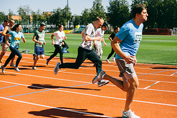
Финальный отбор
-
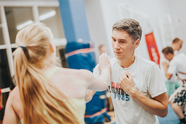
Бокс
-
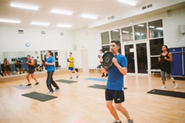
Кроссфит
-
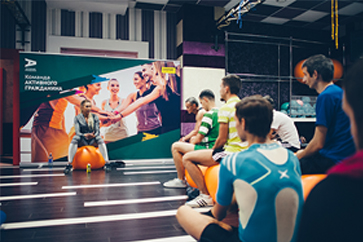
Мастер-класс
на выносливость
«Расписание тренировок и мастер-классов»
Каждую неделю для команды «Активного гражданина» проходят тренировки и мастер-классы.
И вы тоже можете присоединиться!
Что для этого нужно сделать?
Следи за нами в социальных сетях проекта и участвуй в розыгрыше билетов или заходи в наш «Магазин поощрений» и покупай самостоятельно.
Тренировки
-
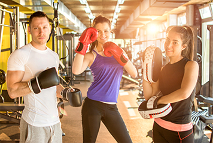
Бокс
27 августа - 19:30-20:30
29 августа - 19:30-20:30
-
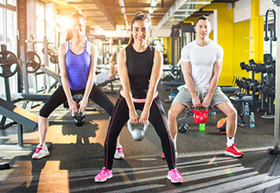
Кроссфит
5 сентября - 19:30-20:30
10 сентября - 19:30-20:30
-
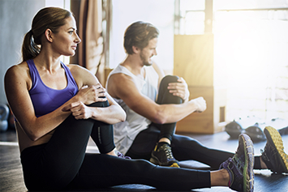
Растяжка
31 августа - 19:30-20:30
7 сентября - 20:00-21:00
-
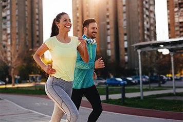
Бег
3 сентября - 19:30-20:30
14 сентября - 19:30-20:30
19 сентября - 19:30-20:30
Мастер-классы
-
Мастер-класс по мотивации
2 сентября - 13:00-15:00
Татьяна Рыбакова – фитнес-блогер в Инстаграм @tanya_rybakova, автор книги «Как я похудела на 55 кг», специалист по здоровому образу жизни и правильному питанию
-
Мастер-класс на выносливость
9 сентября - 14:00-16:00
Наталья Луговских - тренер передачи «Взвешенные люди», сертифицированный тренер и диетолог. Абсолютная чемпионка мира, Европы и России по фитнес-бикини, Мисс Олимпия. Победительница мирового Elite world ranking IFBB.
-
Мастер-класс по питанию
16 сентября - 12:00-14:00
Юлия Бастрыгина – врач-диетолог, эксперт персональной программы контроля веса Bodykey от Nutrilite, диетолог реалити-шоу «Взвешенные люди» расскажет как достичь идеала с пользой для здоровья.
-
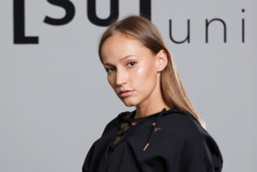
Мастер-класс по восстановлению
22 сентября - 12:00-14:00
Соня Солдатова – популярный фитнес-блогер, тренер по восстановлению и растяжке.
Наша цель – пробежать 10 км на Московском марафоне
История
Московского марафона
Московский марафон – самый масштабный старт столицы. Впервые забег провели в 2013 году, тогда
он стал преемником другого
крупного соревнования по бегу, в котором принимали участие профессиональные спортсмены и
любители - Московский международный
марафон мира.
Это спортивное мероприятие проходило в Москве ежегодно, начиная с 1981 года, вплоть до
2013 года. 23 сентября 2018
года марафон пробежит
по улицам нашего города уже в 6 раз. А вместе с ним по традиции стартует и верный
«Спутник» - забег на дистанцию 10
км.
Узнать все
подробности о марафоне и его
маршруте
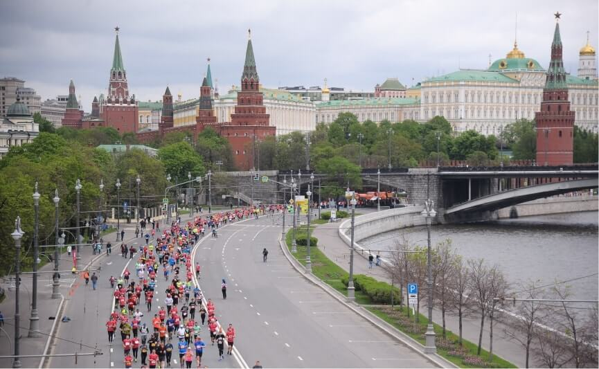 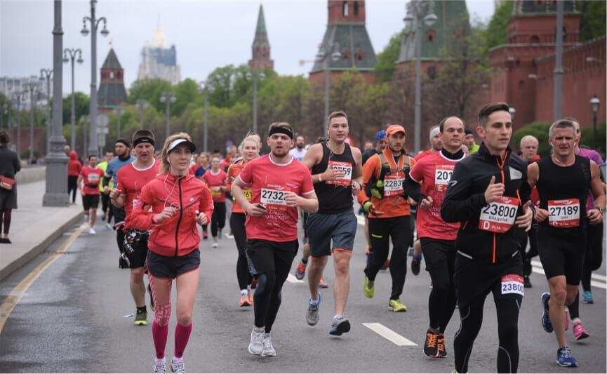 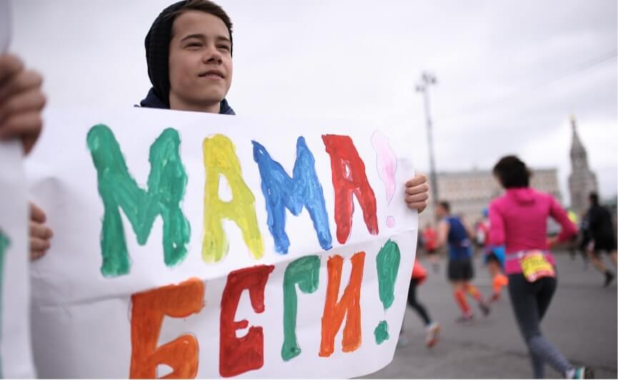
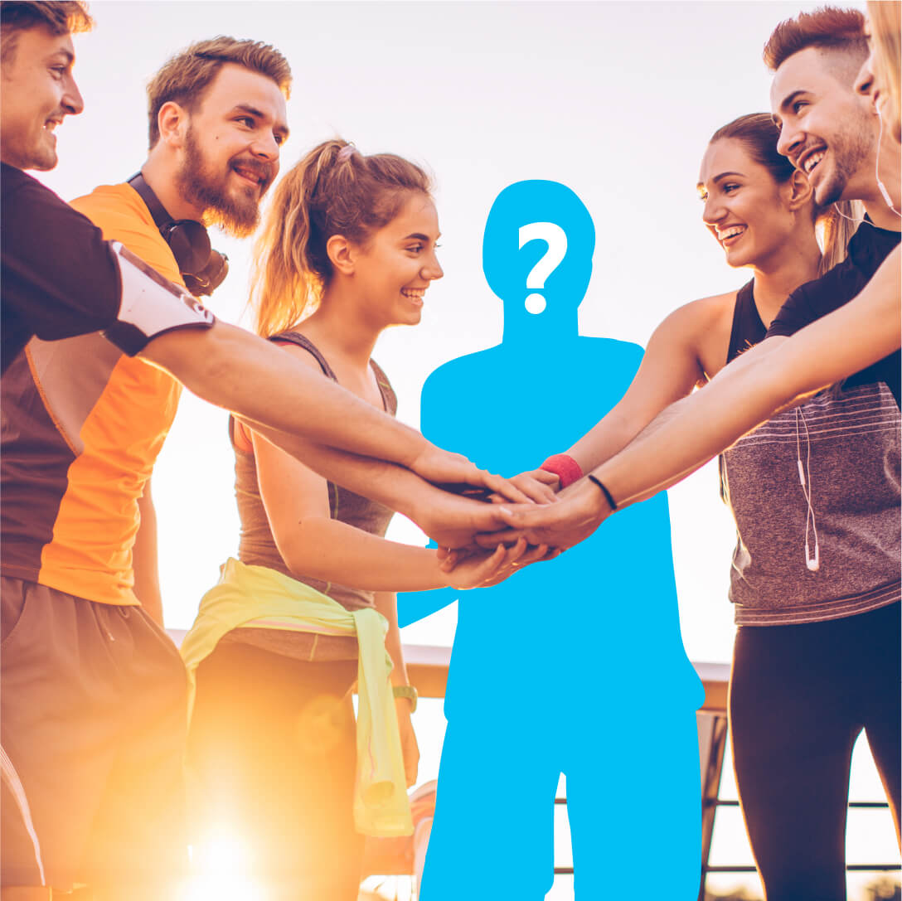
Немного о сюрпризах
Одним из участников команды «Активный гражданин» станет именитый спортсмен, имя которого пока держится в тайне.
Как это было?
Финальный отбор этапа прошел 25 августа 2018 года на стадионе «Лужники»
Тренировка состояла из трех этапов:
- прохождение медицинского осмотра
- сдача показателей ГТО
- забег на время
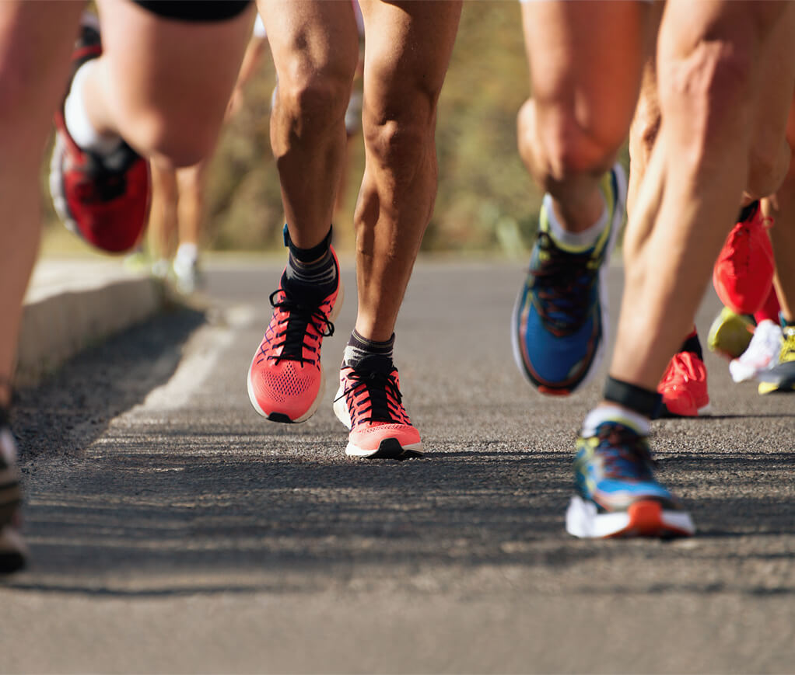
Условия проекта
Первым и обязательным условием является активация промокода MOSCOWMARATHON.
Активировали?
Среди тех, кто ввел промокод по балльной системе определят самых достойных.
Система отбора 50 пользователей
-
Регистрация в проекте «Активный гражданин»
- С 2018 года – 6 баллов
- С 2017 года – 7 баллов
- С 2016 года – 8 баллов
- С 2015 года – 9 баллов
- С 2014 года – 10 баллов
-
Бейдж месяца
- За каждый месяц в 2015, 2016, 2017 по 1 баллу
- За каждый месяц 2018
(с января по июнь) – 3 балла, - В июле 2018 за все пройденные голосования – 7 баллов
-
Бейдж года
- За каждый год
по 5 баллов (2016, 2017) - максимально 10 баллов
- За каждый год
-
Чекин на дне АГ 2018
- 3 балла
Найдите себя в списке претендентов на участие!
Итак, вы в числе 50 самых активных, теперь пора приступать к тренировкам, за которыми будет наблюдать опытный тренер, а по их итогам он выберет 25 самых быстрых и выносливых участников, которые попадут в команду.